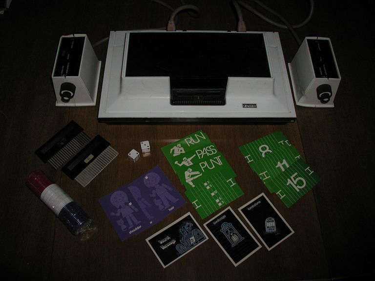
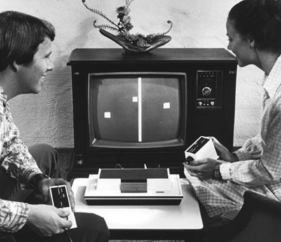
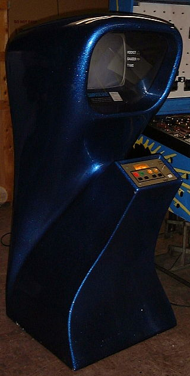
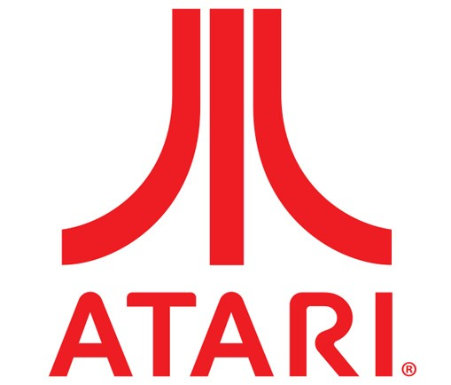
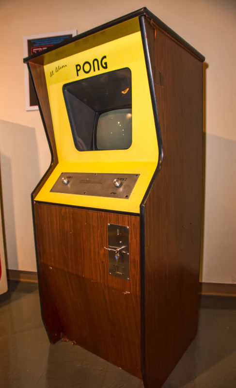

Després dels primers videojocs, la majoria d'aquests produïts en universitats i sense arribar a cap èxit comercial l'any 1972 apareix Ralph Baer. Conegut com el pare dels videojocs, després de molts anys de recerca llança Magnavox Odyssey. Es tracta de la primera videoconsola comercial de la història, un aparell que es connectava a la televisió amb dos controladors rectangulars que feien de comandament.
Aquesta portava un set amb sis cartutxos i estava fabricada exclusivament a base de transistors, resistències i condensadors. És a dir, no hi havia ni processador ni una unitat de memòria, l'Odyssey era una màquina increïblement simple incapaç d'emetre cap so o memoritzar el progrés dels jugadors, aquests havien d'anotar els punts a mà. Els seus gràfics eren tan primitius que la consola venia amb un set de plantilles diferents per posar a la pantalla, bitllets, fitxes de pòquer, daus i cartons per a anotacions (com si fos un joc de taula).
La consola va tenir bastant d’èxit, es van vendre 100.000 unitats a 100 dòlars cadascuna. Un dels jocs que oferia era un ping pong, aquest joc va despertar l'interès tant de consumidors com de companyies, aquestes van començar a desenvolupar les seves pròpies màquines que reproduïssin el joc.
Aquest mateix any l'enginyer Nolan Bushnell junt amb Ted Dabney funden l'empresa Atari i lloguen un petit taller en Silicon Valley. Bushnell havia creat computer space un any abans, era una còpia de Spacewars! (també arcade) que va resultar fallit a causa de la seva complexitat i poca adaptabilitat al jugador.
Encara així Bushnell estava decidit a fer un videojoc que pogués ser jugat per qualsevol. Ell va acudir en 1972 a una fira on va veure la videoconsola Magnavox Odyssey, la va provar jugant al joc de ping pong i es va adonar que podia ser millorat.
Nolan Bushnell al costat de l'enginyer Al Alcorn es van posar a la feina i van crear Pong, per a testar-lo van instal·lar un prototip en una taverna local amb un televisor i una capseta on queien les monedes que inseria la gent que volia jugar. L'endemà van avisar-los que la màquina s'havia espatllat. Aquesta no s'havia espatllat, el problema era que no cabien més monedes en la caixa. A partir dels resultats de la seva senzilla però efectiva prova de màrqueting, van llogar un edifici més gran que fabricaria unes 100 màquines al dia.
Al final del 1974 ja havien col·locat unes 10.000 per tots els Estats Units. Pong va ser un joc molt popular, però l'aparició d'imitacions fabricades per la competència va impedir que Atari dominés el mercat de les màquines recreatives.
Enfront d'aquesta situació, Atari no es va quedar parada i va començar a treure altres títols com: Space race, Rebound, Gotcha, Qwak! o Tank.
La indústria va començar a donar els seus primers passos, a més Atari també va treure la seva primera consola domèstica: la tele-games pong, un ja es pot imaginar que només tenia un joc i era el Pong, aquesta consola era una clara imitació de l’Odyssey tot i no ser tan rudimentària i incloure un microxip.
Això va ser possible gràcies a un acord de màrqueting i distribució amb els magatzems Sears. Els va encarregar 150.000 unitats per al nadal de 1975 i van vendre totes a menys de 100 dòlars la unitat.
Mentre les màquines arcade i les consoles domèstiques s’enlairaven, en els ordinadors on havien aparegut originàriament els videojocs no acabaven d’arrencar, ja que no tenien monitor i eren excessivament lents.
Fent que els únics jocs possibles fossin conversacionals o per torns. El desenvolupador Will Crowther va crear ADVENT un joc conversacional per a les seves filles que no tan sols va agradar a elles, sinó que va atreure molts més jugadors que el van començar a jugar.
Aquestes línies de text era ADVENT, és increïble pensar que és el començament dels jocs de rol o aventures gràfiques que coneixem avui en dia.
El 1977 les companyies rivals d’Atari la començaven a superar en innovació i tecnologia, això va forçar a Bushnell a vendre Atari a Warner communications per 28 milions de dòlars per a poder finançar la consola Atari vcs 2600 que va revolucionar el mercat dels videojocs domèstics i també va iniciant una nova era.